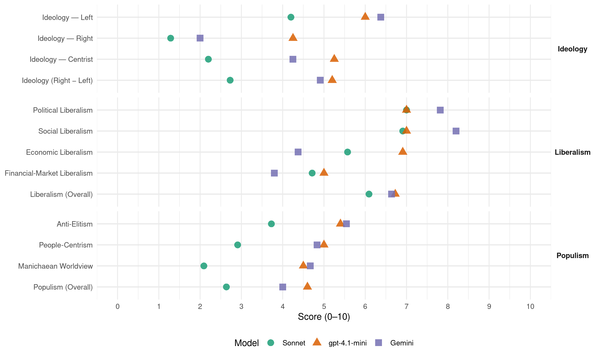

LMP (Hungary, 2010)
manifesto_id 86110_201004
Get full text: This site shows derived annotations and short verbatim quotes only. The full manifesto text is © Manifesto Project / WZB — obtain it via manifesto-project.wzb.eu using the manifesto_id above.
Headline scores
| Dimension | Sonnet | gpt-4.1-mini | Gemini |
|---|---|---|---|
| Populism (Overall) | 2.6 | 4.6 | 4.0 |
| Anti-Elitism | 3.7 | 5.4 | 5.5 |
| People-Centrism | 2.9 | 5.0 | 4.8 |
| Manichaean Worldview | 2.1 | 4.5 | 4.7 |
| Ideology (Right − Left) | 2.7 | 5.2 | 4.9 |
| Liberalism (Overall) | 6.1 | 6.7 | 6.6 |
| Political Liberalism | 7.0 | 7.0 | 7.8 |
| Social Liberalism | 6.9 | 7.0 | 8.2 |
| Economic Liberalism | 5.6 | 6.9 | 4.4 |
| Financial-Market Liberalism | 4.7 | 5.0 | 3.8 |
Evidence per dimension
Economic Liberalism
Gemini · score 5.0 · mixed · chunk 1
“torzítják, igazságtalanná teszik a gazdasági versenyt”
a pártok klientúrája szükségképpen olyan előnyökhöz jut, amelyek torzítják, igazságtalanná teszik a gazdasági versenyt.
Gemini · score 6.0 · verified · chunk 2
“szabályozás év közbeni változtatásának lehetőségét”
ami a szabályozást illeti, mi törvényben korlátoznánk a szabályozás év közbeni változtatásának lehetőségét. A szabályváltoztatás feltételévé
Gemini · score 6.0 · mixed · chunk 3
“versenyt torzító, a gazdasági környezet kiszámíthatatlanságát növelő”
fejezetben (III/A) írunk. A versenyt torzító, a gazdasági környezet kiszámíthatatlanságát növelő egyik alapvető tényező a politika
Gemini · score 3.0 · verified · chunk 4
“postai szolgáltatást és a vízszolgáltatást nem privatizálnánk”
Az üres háziorvosi praxisok betöltését egyszeri kedvezményes hitellel is segítenénk. A postai szolgáltatást és a vízszolgáltatást nem privatizálnánk, megtartanánk közösségi
Gemini · score 3.0 · verified · chunk 5
“nem lehet kizárólag a piaci erők játékára bízni”
A lakhatás olyan alapvető társadalmi szükséglet, amit nem lehet kizárólag a piaci erők játékára bízni.
Gemini · score 7.0 · mixed · chunk 6
“nem értünk egyet azokkal, akik az újraelosztás szintjének csökkentésétől várják a magyar gazdaság fellendülését”
Nem értünk egyet tehát azokkal, akik „koraszülött jóléti államról” beszélnek, és az újraelosztás szintjének csökkentésétől várják a magyar gazdaság fellendülését.
Gemini · score 8.0 · verified · chunk 7
“Ezzel verseny alakulna ki ezen a piacon”
Semmi akadálya nincs annak, hogy ügyvédek is készíthessenek közokiratot. Ezzel verseny alakulna ki ezen a piacon, és a szerződéskötések díja
Gemini · score 6.0 · verified · chunk 8
“szabályozott verseny feltételeit meg kell teremteni”
Az árampiac A szabályozott verseny feltételeit meg kell teremteni az árampiacon. Ennek legnagyobb akadálya
Gemini · score 3.0 · verified · chunk 9
“szabályozni és korlátozni tervezzük a”
Szabályozni és korlátozni tervezzük a káros városszerkezeti, közlekedési és környezeti
Gemini · score 3.0 · verified · chunk 10
“erdővagyon privatizálásának megakadályozására”
nem tartalmaz megfelelő garanciákat az erdővagyon privatizálásának megakadályozására, és továbbra sem
Gemini · score 3.0 · verified · chunk 11
“A termelők, elosztók vagy importőrök felelősségét kiterjesztenénk”
szervezetek és más csoportokkal való konzultáció útján hoznánk meg. A termelők, elosztók vagy importőrök felelősségét kiterjesztenénk a termékek teljes életciklusára. A termelők
gpt-4.1-mini · score 7.0 · verified · chunk 1
“a gazdaságot nem a növekvő alapanyag- és energiafelhasználás hajtsa, hanem az emberi tőke fejlődése”
Mind az ökológiai, mind a társadalmi érdek az lenne, hogy a gazdaságot ne a növekvő alapanyag- és energiafelhasználás hajtsa, hanem az emberi tőke fejlődése, a társadalmi tőke magas szintje, a kitűnő iskolákban magas szintű kompetenciákat szerzett munkavállalók által előállított magas hozzáadott érték, a munkaerőpiacról húsz éve kiszorult emberek visszatérésre a munkába, társadalmi integrációja, a szegénységből való kiemelkedése.
gpt-4.1-mini · score 6.0 · verified · chunk 2
“a versenyt torzító tényezők legfontosabbika azonban a gazdaság és a politika összefonódása”
A politikai versenyt torzító tényezők legfontosabbika azonban a gazdaság és a politika összefonódása, ami a törvénytelen csillagászati kampányköltésekben ölt testet.
gpt-4.1-mini · score 7.0 · verified · chunk 3
“a munkához kapcsolódó terhek csökkentésével”
egy bevételsemleges átrendezést javasoltunk a költségvetés bevételi oldalán, a munkához kapcsolódó terhek csökkentésével, amihez a fogyasztás, a vagyon és a környezetterhelés fokozottabb adóztatásával javasoltuk megteremteni a forrást.
gpt-4.1-mini · score 7.0 · verified · chunk 4
“a mezőgazdaság foglalkoztatási és népességmegtartó hatása szempontjából döntő jelentőségű”
A mezőgazdaság foglalkoztatási és népességmegtartó hatása szempontjából döntő jelentőségű, hogy kié a föld. Mi azt tartjuk optimálisnak, ha a termőföld döntően helyben lakó, életvitelszerűen gazdálkodó emberek kezében van.
gpt-4.1-mini · score 7.0 · verified · chunk 5
“a helyi gazdasági folyamatok támogatásával kell alakítani”
A globális igazságosság fejlesztéspolitikája alternatívája a neoliberális szemléletű fejlesztéspolitikának. Ezt részben globális szabályozással, részben az állami kormányzás megerősítésével, részben pedig a helyi gazdasági folyamatok támogatásával kell alakítani.
gpt-4.1-mini · score 6.0 · verified · chunk 6
“a gazdaságot nem célnak tekinti, hanem eszköznek”
Szerintünk a jó kormányzás a gazdaságot nem célnak tekinti, hanem eszköznek arra, hogy az erőforrások fenntartható, tehát korlátozott használatából ne csupán az elfogyasztható javak mennyiségén múló társadalmi jól-lét maximumát hozzuk ki.
gpt-4.1-mini · score 8.0 · verified · chunk 7
“az adózás adminisztrációs költségeit, lehetővé kell tennie a foglalkoztatás bővülését”
Az adóreformnak kiszámíthatóbbá kell tennie a gazdasági környezetet, csökkentenie kell az adózás adminisztrációs költségeit, lehetővé kell tennie a foglalkoztatás bővülését, szélesítenie kell az adóalapot, vissza kell szorítania az adóelkerülést és a fenntarthatóság irányába kell terelnie a gazdaságot.
gpt-4.1-mini · score 8.0 · verified · chunk 8
“Zöld adóreformot kell végrehajtani, ami a takarékosságra és az energiahatékonyság fejlesztésére ösztönöz”
…A szabályozás stabilitása, kiszámíthatósága az energiaiparban alapvető, és ezen belül a megújuló piacon kulcsfontosságú. A stabil szabályozási és támogatáspolitika kialakításához elengedhetetlen kutatásokat és részletes elemzéseket minél hamarabb meg kell kezdeni. Zöld adóreformot kell végrehajtani, ami a takarékosságra és az energiahatékonyság fejlesztésére ösztönöz (lásd az előző fejezetben)….
gpt-4.1-mini · score 7.0 · verified · chunk 9
“a mezőgazdasági termékek kereskedelmét a WTO szabadkereskedelmi szabályozása alól”
Többek között ezért is akarjuk kivonni a mezőgazdasági termékek kereskedelmét a WTO szabadkereskedelmi szabályozása alól (lásd a III/A fejezet mezőgazdasággal foglalkozó részét). Addig is elő kell írni, hogy külön jelezzék a veszélyes anyagok jelenlétét a termékekben.
gpt-4.1-mini · score 6.0 · verified · chunk 10
“a mezőgazdasági támogatások jelentős részét át kell csoportosítani a termeléshez köthető támogatásoktól a természetmegőrzést hatékonyabban szolgáló, komplex vidékfejlesztési célokra”
…a mezőgazdasági támogatások jelentős részét át kell csoportosítani a termeléshez köthető támogatásoktól a természetmegőrzést hatékonyabban szolgáló, komplex vidékfejlesztési célokra (a KAP II. pillér). Támogatni kell a környezetbarát, integrált növényvédelmet, és ösztönözni az ökológiai (bio-) gazdálkodás nagyarányú elterjedését….
gpt-4.1-mini · score 7.0 · verified · chunk 11
“A kormányzati szerveknek felelősséget kell vállalniuk és példamutató szerepet kell betölteniük beszerzéseik során a környezetbarát termékek előnyben részesítésével”
A zöld közbeszerzés alkalmazását szorgalmazzuk. A kormányzati szerveknek felelősséget kell vállalniuk és példamutató szerepet kell betölteniük beszerzéseik során a környezetbarát termékek előnyben részesítésével, már a pályázati kiírásokban is. Megfelelő szabályozással el kell érni, hogy a reklámok ne akadályozzák a szemléleti váltást, és ne gerjesszék a felesleges fogyasztást.
Sonnet · score 5.0 · verified · chunk 1
“tisztességes piaci viszonyok és joguralom”
Önrendelkezés, tisztességes piaci viszonyok és joguralom helyett egy zárt, oligarchikus és a jog felett álló elit
Sonnet · score 6.0 · verified · chunk 2
“versenyképesség javítása”
az egységes piac útjában álló akadályok elhárítása, a versenyképesség javítása
Sonnet · score 7.0 · verified · chunk 3
“csökkenteni kell a munkaerő-felvétel kockázatát”
Javítani kell azokon a szabályozási és adózási feltételeken, amelyek a munkaerő iránti keresletet befolyásolják. Ezen belül a legfontosabb, hogy csökkenteni kell a munkaerő-felvétel kockázatát és a képzetlen munkaerő bérköltségét.
Sonnet · score 5.0 · mixed · chunk 4
“A mezőgazdasági kereskedelmet ki kell vonni”
A mezőgazdasági kereskedelmet ki kell vonni a WTO szabadkereskedelmi szabályozása alól. A távolról érkező, agyoncsomagolt termékek a környezetnek és a klímának is ártanak.
Sonnet · score 4.0 · verified · chunk 5
“piaci erők játékára bízni”
A lakhatás olyan alapvető társadalmi szükséglet, amit nem lehet kizárólag a piaci erők játékára bízni
Sonnet · score 6.0 · mixed · chunk 6
“torzítatlan piac, ahol nincsenek a politika által preferált”
a gazdasági szereplőknek le nem kötelezett pártok, valamint a torzítatlan piac, ahol nincsenek a politika által preferált, közpénzből izmosodó szereplők
Sonnet · score 7.0 · verified · chunk 7
“verseny alakulna ki ezen a piacon”
Semmi akadálya nincs annak, hogy ügyvédek is készíthessenek közokiratot. Ezzel verseny alakulna ki ezen a piacon, és a szerződéskötések díja drasztikusan csökkenhetne.
Sonnet · score 6.0 · verified · chunk 8
“szabályozott verseny feltételeit meg kell teremteni”
A szabályozott verseny feltételeit meg kell teremteni az árampiacon. Ennek legnagyobb akadálya a Magyar Villamosművek Zrt. (MVM), amely a tulajdonában levő erőművekkel és jogosultságaival kvázi-monopóliumként viselkedve torzítja a rendszert.
Sonnet · score 4.0 · verified · chunk 9
“a finanszírozás piacelvű átalakítását azonban akkor sem támogatnánk”
A finanszírozás piacelvű átalakítását azonban akkor sem támogatnánk, ha arra legalább a saját alapfeltevéseivel összhangban álló javaslat érkezne.
Sonnet · score 5.0 · mixed · chunk 10
“privatizációját és az állami tulajdonban tartását sem”
Nem támogatjuk a víziközmű-szolgáltató cégek privatizációját és az állami tulajdonban tartását sem. Ezek önkormányzati tulajdonban – helyi kontroll alatt – vannak a legjobb helyen.
Sonnet · score 5.0 · mixed · chunk 11
“Állami kontrollt vezetnénk be a hasznosítási díjak”
Állami kontrollt vezetnénk be a hasznosítási díjak meghatározásában. Az export útján történő hasznosítást visszaszorítanánk és ellenőriznénk.
Financial-Market Liberalism
Gemini · score 4.0 · verified · chunk 2
“rövidtávú pénzmozgásokra kivetett Tobin-adó”
globális adók bevezetését, mint például a nemzetközi szénadó, vagy a rövidtávú pénzmozgásokra kivetett Tobin-adó. Szükség van egy
Gemini · score 3.0 · verified · chunk 4
“lakáshitelezés, vagy a kistelepülések ingatlanállományának mobilizálását”
vidéki sajátosságokhoz igazodó lakáshitelezés, vagy a kistelepülések ingatlanállományának mobilizálását segítő kockázatialap-képzés.
Gemini · score 2.0 · verified · chunk 5
“Tobin-adó, ami a rövid távú spekulatív pénzmozgások megadóztatásával”
Az egyik legismertebb ezek közül a Tobin-adó, ami a rövid távú spekulatív pénzmozgások megadóztatásával egyrészt csökkentené a nemzetközi pénzpiacok volatilitását
Gemini · score 7.0 · verified · chunk 6
“mikroprudenciális szinten korlátozza az egyének hitelfelvételét”
Amennyiben ez nem történik meg, a törvényhozásnak törvényt kell alkotnia, amely mikroprudenciális szinten korlátozza az egyének hitelfelvételét. Egy ilyen szabályozás összhangban lenne az egyéni adósok
Gemini · score 3.0 · verified · chunk 7
“könyvvizsgáló cégek problémamentesnek minősítették a pénzintézet”
Magyarországon a legjobb példa erre a Postabank ügye, ahol a könyvvizsgáló cégek problémamentesnek minősítették a pénzintézet gazdasági helyzetét, később mégis
gpt-4.1-mini · score 3.0 · verified · chunk 2
“a kampányfinanszírozás jelenlegi gyakorlata a politikához kapcsolódó korrupció egyik legfőbb hajtóereje”
A kampányfinanszírozás jelenlegi gyakorlata a politikához kapcsolódó korrupció egyik legfőbb hajtóereje, egyben a pártok közti verseny antidemokratikus eltorzításának egyik legfőbb eszköze.
gpt-4.1-mini · score 6.0 · verified · chunk 5
“a Tobin-adó mielőbbi bevezetését”
Az egyik legismertebb ezek közül a Tobin-adó, ami a rövid távú spekulatív pénzmozgások megadóztatásával egyrészt csökkentené a nemzetközi pénzpiacok volatilitását, ezáltal a hirtelen pénzügyi válságok kialakulásának esélyét, másrészt növelné az ENSZ fejlesztésre rendelkezésre álló keretét. Franciaország és Belgium is rendelkezik már a Tobin-adó bevezetésének törvényi kereteivel, támogatják azt, amenynyiben további európai országok csatlakoznak hozzá. Magyarországnak is támogatnia kell a Tobin-adó mielőbbi bevezetését, és hogy minél több ország csatlakozzon hozzá.
gpt-4.1-mini · score 6.0 · verified · chunk 7
“a könyvvizsgálók nem felelősek, ha hamis adatokat hitelesítenek”
A bíróság mégis elutasította az állam kártérítési keresetét azzal az indoklással, hogy a könyvvizsgálók nem felelősek, ha hamis adatokat hitelesítenek.
Sonnet · score 4.0 · verified · chunk 2
“rövidtávú pénzmozgásokra kivetett Tobin-adó”
Támogatjuk olyan globális adók bevezetését, mint például a nemzetközi szénadó, vagy a rövidtávú pénzmozgásokra kivetett Tobin-adó.
Sonnet · score 7.0 · verified · chunk 3
“befektetések megtérülését”
Mindezek a változások kiszámíthatóbbá tennék a befektetések megtérülését, kedvezőbb feltételeket hoznának létre a gazdasági környezet változásaival szemben legvédtelenebb… kis- és középvállalati szektor számára
Sonnet · score 4.0 · verified · chunk 4
“lakáshitelekhez kapcsolódó bőkezű és rosszul célzott”
a lakáshitelekhez kapcsolódó bőkezű és rosszul célzott támogatások voltak felelősek. A magyar állam 2003 és 2008 között minden évben több mint százmilliárd forintot költött el
Sonnet · score 3.0 · verified · chunk 5
“rövid távú spekulatív pénzmozgások megadóztatásával”
a Tobin-adó, ami a rövid távú spekulatív pénzmozgások megadóztatásával egyrészt csökkentené a nemzetközi pénzpiacok volatilitását, ezáltal a hirtelen pénzügyi válságok kialakulásának esélyét
Sonnet · score 5.0 · mixed · chunk 6
“felügyeleti és monetáris szerveknek be kell avatkozniuk”
a felügyeleti és monetáris szerveknek be kell avatkozniuk annak érdekében, hogy a korábbi egészségtelen gyors hitelállomány-növekedés ne ismétlődhessen meg
Sonnet · score 5.0 · verified · chunk 7
“könyvvizsgálói hitelesítés nem jelent garanciát”
Ha ezek szerint a könyvvizsgálói hitelesítés nem jelent garanciát, a kötelezővé tétele ésszerűtlen.
Sonnet · score 6.0 · verified · chunk 8
“kvótabevételt is ebben az alapban kezelnénk”
A kvótabevételt is ebben az alapban kezelnénk, az eddigi bevételt is az eredeti rendeltetésére fordítanánk. Így egyrészt nem büntetnének minket a kvótabevételnek a szerződésben vállalttól eltérő felhasználásáért
Sonnet · score 4.0 · verified · chunk 9
“magánbiztosítók profitját és megkockáztatni”
Ezért egészen biztosan nem érdemes finanszírozni a magánbiztosítók profitját és megkockáztatni a nem profitábilis betegek kiszolgáltatottá válását.
Political Liberalism
Gemini · score 9.0 · verified · chunk 1
“alkotmányos rendet alapvetően alkalmasnak tartjuk”
Az 1989-90-es jogállami forradalom által létrehozott alkotmányos rendet alapvetően alkalmasnak tartjuk arra, hogy egy jól működő
Gemini · score 8.0 · verified · chunk 2
“demokratikus intézményrendszerbe vetett bizalmat”
politikai korrupció aláássa a demokratikus intézményrendszerbe vetett bizalmat. A részvételt korlátozó
Gemini · score 8.0 · verified · chunk 3
“parlament kétharmados többségének erejével szigorú korlátokat szab”
felállítása. Az előbbi lényege, hogy a parlament kétharmados többségének erejével szigorú korlátokat szab az államadósság és a költségvetési
Gemini · score 8.0 · verified · chunk 4
“fejleszteni a részvételi demokrácia”
fejezetben írtuk, hogy szeretnénk fejleszteni a részvételi demokrácia olyan intézményeit
Gemini · score 8.0 · verified · chunk 5
“változtatást kétharmados törvényben a Költségvetési Tanács jóváhagyásához kötjük”
szabályozásban, ezért a nyugdíjtörvényben nemcsak a nyugdíjrendszer aktuális paramétereit, hanem azok megváltoztatásának lehetőségeit is rögzíteni kell, a változtatást kétharmados törvényben a Költségvetési Tanács jóváhagyásához kötjük.
Gemini · score 8.0 · verified · chunk 6
“pénzek elköltését átláthatóvá kell tenni”
nem biztosított kellően az átláthatóság és az ellenőrzés. Ezek hiányában lehetetlen felmérni és értékelni a hazai segélyezési gyakorlat eredményességét. A pénzek elköltését átláthatóvá kell tenni, a projektértékelők nyilvános
Gemini · score 8.0 · verified · chunk 7
“javítaná az állampolgári ellenőrzés és részvétel lehetőségeit”
nyílt dokumentumformátumok kötelező használatát. Ez a lépés javítaná az állampolgári ellenőrzés és részvétel lehetőségeit.
Gemini · score 7.0 · verified · chunk 8
“demokratikus önrendelkezés fejlesztését, mind a társadalmi”
Noha mind a demokratikus önrendelkezés fejlesztését, mind a társadalmi befogadást és igazságosságot olyan értéknek
Gemini · score 8.0 · verified · chunk 9
“közösségi tervezés és a részvételi demokrácia”
Ezért mi bevezetnénk a közösségi tervezés és a részvételi demokrácia máshol már bevált intézményeit, megerősítenénk
Gemini · score 7.0 · verified · chunk 10
“demokráciára neveléssel és a globális felelősségvállalásra”
nincs érdemi kapcsolata a demokráciára neveléssel és a globális felelősségvállalásra neveléssel sem.
Gemini · score 7.0 · verified · chunk 11
“A valós környezeti információknak mindenki számára elérhetőknek kell lenniük”
nélkül módosítás se legyen elfogadható. A valós környezeti információknak mindenki számára elérhetőknek kell lenniük (számszerűen, és közérthetően megfogalmazva, a tendenciákat
gpt-4.1-mini · score 7.0 · verified · chunk 1
“Jogállam van, a szabadságunkat és biztonságunkat stabilan működő intézmények védik”
A két évtizeddel ezelőtt létrehozott alkotmányos rend megteremtette a magánélet, a szólás és a lelkiismeret korábban sosem látott szabadságát. Jogállam van, a szabadságunkat és biztonságunkat stabilan működő intézmények védik. Vannak valódi politikai jogaink. Ha a közügyekről tájékozódni akarunk, a legtöbb esetben megtaláljuk hozzá a forrásokat, ha el akarjuk mondani a véleményünket, különösebb kockázat nélkül megtehetjük.
gpt-4.1-mini · score 4.0 · verified · chunk 2
“Az ombudsmani rendszer nem elég differenciált, és a kapacitása sem elegendő ahhoz, hogy a végrehajtó hatalmat hatékonyan ellenőrizze.”
Az ombudsmani rendszer nem elég differenciált, és a kapacitása sem elegendő ahhoz, hogy a végrehajtó hatalmat hatékonyan ellenőrizze. A köztársasági elnöki intézmény csak nagyon mérsékelt ellensúlyt képez.
gpt-4.1-mini · score 7.0 · verified · chunk 3
“a közpénzügyi törvény újbóli benyújtása és a Költségvetési Tanács felállítása”
Ezért szerepelt a 2008 októberében nyilvánosságra hozott közpolitikai javaslatcsomagunkban a közpénzügyi törvény újbóli benyújtása és a Költségvetési Tanács felállítása. Az előbbi lényege, hogy a parlament kétharmados többségének erejével szigorú korlátokat szab az államadósság és a költségvetési hiány alakulásának. Az utóbbi fő feladata a költségvetési politika átláthatóságának biztosítása, a kiadások és bevételek szerkezetének rendszeres vizsgálata, illetve a költségvetési tervezést megalapozó számítások értékelése, közzététele.
gpt-4.1-mini · score 7.0 · verified · chunk 4
“fejleszteni a részvételi demokrácia olyan intézményeit, mint például a közösségi tervezés”
A demokrácia fejlesztéséről szóló fejezetben írtuk, hogy szeretnénk fejleszteni a részvételi demokrácia olyan intézményeit, mint például a közösségi tervezés. A vidékfejlesztés témakörén belül ehhez több gyakorlati példát is lehet találni.
gpt-4.1-mini · score 8.0 · verified · chunk 5
“a magyar társadalom és gazdaság érdeke is”
A bevándorlók magyarországi integrációja a magyar társadalom és gazdaság érdeke is. b) A tudatosság erősítése A médián és az oktatási rendszeren keresztül elengedhetetlen a közvélemény tájékoztatása a bevándorlással kapcsolatos kérdésekben. A külföldiekkel szemben fennálló bizalmatlanságot csökkenteni kell.
gpt-4.1-mini · score 7.0 · verified · chunk 6
“a demokráciáról szóló I/A fejezetet”
a demokráciáról szóló I/A fejezetet), sőt a szabályozók kiszámíthatatlan, sokszor ugyancsak klientúraérdekek által mozgatott gyakori változtatásával, és az egyes gazdasági szereplőknek juttatott egyedi kedvezmények és támogatások sokaságával torz, piacellenes gazdasági környezetet teremtett, amelyben túlzott a saját önkényes, esetleges, fejlesztői stratégiát nélkülöző befolyása.
gpt-4.1-mini · score 8.0 · verified · chunk 7
“az állampolgári ellenőrzés és részvétel lehetőségeit”
Ilyen esetekben javasoljuk a nyílt dokumentumformátumok kötelező használatát. Ez a lépés javítaná az állampolgári ellenőrzés és részvétel lehetőségeit.
gpt-4.1-mini · score 7.0 · verified · chunk 8
“Az Alkotmány mindenki számára biztosítja az egészséges környezethez (18.§) és a lehető legmagasabb szintű testi és lelki egészséghez (70/D §, (1) bekezdés) való jogot.”
…a jogok érvényesítése logikusan feltételezné a megelőzési törekvések elsődlegességét és a jogok kikényszerítéséhez szükséges eszközök meglétét. Az Alkotmány mindenki számára biztosítja az egészséges környezethez (18.§) és a lehető legmagasabb szintű testi és lelki egészséghez (70/D §, (1) bekezdés) való jogot. Jogunk tehát nem a teljes csendhez…
gpt-4.1-mini · score 7.0 · verified · chunk 9
“a demokratikus elvek érvényesülésével is”
A környezettel kapcsolatos kérdések szoros összefüggésben vannak a demokratikus elvek érvényesülésével is. A környezeti demokrácia, ami a demokratikus elvek kiterjesztését jelenti olyan csoportokra illetve mechanizmusokra, melyekre a hagyományos demokratikus döntéshozatal nem fordít kellő figyelmet, Magyarországon gyerekcipőben jár.
gpt-4.1-mini · score 7.0 · verified · chunk 10
“A valós környezeti információknak mindenki számára elérhetőknek kell lenniük”
…szabály-módosítások. Hatásvizsgálati elemzés nélkül módosítás se legyen elfogadható. A valós környezeti információknak mindenki számára elérhetőknek kell lenniük (számszerűen, és közérthetően megfogalmazva, a tendenciákat bemutatva). Szigorúan be kell tartatni a vonatkozó jogszabályokat (Aarhusi Egyezmény, elektronikus információszabadságról szóló törvény stb.)….
gpt-4.1-mini · score 8.0 · verified · chunk 11
“A valós környezeti információknak mindenki számára elérhetőknek kell lenniük”
Szűnjenek meg az ad hoc politikai, vagy lobbiérdekeknek megfelelő jogszabály-módosítások. Hatásvizsgálati elemzés nélkül módosítás se legyen elfogadható. A valós környezeti információknak mindenki számára elérhetőknek kell lenniük (számszerűen, és közérthetően megfogalmazva, a tendenciákat bemutatva). Szigorúan be kell tartatni a vonatkozó jogszabályokat (Aarhusi Egyezmény, elektronikus információszabadságról szóló törvény stb.).
Sonnet · score 7.0 · verified · chunk 1
“a demokráciát mindinkább azzá fejleszteni”
A demokrácia és a szabadságjogok mellett elkötelezett zöld politika előtt nincs más út, mint megpróbálni a demokráciát mindinkább azzá fejleszteni
Sonnet · score 8.0 · verified · chunk 2
“deliberatív demokrácia fejlesztése érdekében”
a döntések mögötti elvek és érvek jobb átláthatósága, ezáltal a deliberatív demokrácia fejlesztése érdekében kontradiktorikussá szeretnénk tenni
Sonnet · score 7.0 · verified · chunk 3
“Költségvetési Tanács felállítása”
közpolitikai javaslatcsomagunkban a közpénzügyi törvény újbóli benyújtása és a Költségvetési Tanács felállítása… a parlament kétharmados többségének erejével szigorú korlátokat szab az államadósság és a költségvetési hiány alakulásának
Sonnet · score 7.0 · verified · chunk 4
“demokratikus alapelveket sért”
Ez, azon a túl, hogy demokratikus alapelveket sért, növeli a feszültséget, és nagyban megnehezíti a konfliktushelyzetek megoldását.
Sonnet · score 6.0 · verified · chunk 5
“kétharmados törvényben a Költségvetési Tanács jóváhagyásához”
a nyugdíjtörvényben nemcsak a nyugdíjrendszer aktuális paramétereit, hanem azok megváltoztatásának lehetőségeit is rögzíteni kell, a változtatást kétharmados törvényben a Költségvetési Tanács jóváhagyásához kötjük
Sonnet · score 7.0 · verified · chunk 6
“átláthatóbbá tegyük az önkormányzati szektor gazdálkodását”
Ehhez nélkülözhetetlen, hogy átláthatóbbá tegyük az önkormányzati szektor gazdálkodását. Jelenleg ugyanis még az sem tudható pontosan, hogy mekkora az önkormányzati szektor függő kötelezettségvállalásainak mértéke.
Sonnet · score 7.0 · verified · chunk 7
“állampolgári ellenőrzés és részvétel lehetőségeit”
Ez a lépés javítaná az állampolgári ellenőrzés és részvétel lehetőségeit.
Sonnet · score 7.0 · verified · chunk 8
“demokratikus önrendelkezés fejlesztését”
mind a demokratikus önrendelkezés fejlesztését, mind a társadalmi befogadást és igazságosságot olyan értéknek tartjuk, amelyet önmagáért is a politikánk középpontjába állítanánk
Sonnet · score 7.0 · verified · chunk 9
“részvételi demokrácia máshol már bevált intézményeit”
mi bevezetnénk a közösségi tervezés és a részvételi demokrácia máshol már bevált intézményeit, megerősítenénk a társadalmi részvétel törvényi garanciáit
Sonnet · score 7.0 · verified · chunk 10
“társadalmi részvételt a pályázati támogatások megfelelő részvételi folyamatok”
A társadalmi részvételt a pályázati támogatások megfelelő részvételi folyamatok végrehajtásához kötésével is erősíteni kell. Széles körben be kell vezetni az elektronikus ügyintézést.
Sonnet · score 7.0 · verified · chunk 11
“A valós környezeti információknak mindenki számára elérhetőknek”
A valós környezeti információknak mindenki számára elérhetőknek kell lenniük (számszerűen, és közérthetően megfogalmazva, a tendenciákat bemutatva).
Liberalism (Overall)
Gemini · score 8.0 · verified · chunk 1
“alkotmányos rendet alapvetően alkalmasnak tartjuk”
Az 1989-90-es jogállami forradalom által létrehozott alkotmányos rendet alapvetően alkalmasnak tartjuk arra, hogy egy jól működő
Gemini · score 7.0 · verified · chunk 2
“demokratikus intézményrendszerbe vetett bizalmat”
politikai korrupció aláássa a demokratikus intézményrendszerbe vetett bizalmat. A részvételt korlátozó
Gemini · score 7.0 · verified · chunk 3
“parlament kétharmados többségének erejével szigorú korlátokat szab”
felállítása. Az előbbi lényege, hogy a parlament kétharmados többségének erejével szigorú korlátokat szab az államadósság és a költségvetési
Gemini · score 6.0 · verified · chunk 4
“fejleszteni a részvételi demokrácia”
fejezetben írtuk, hogy szeretnénk fejleszteni a részvételi demokrácia olyan intézményeit
Gemini · score 6.0 · verified · chunk 5
“változtatást kétharmados törvényben a Költségvetési Tanács jóváhagyásához kötjük”
szabályozásban, ezért a nyugdíjtörvényben nemcsak a nyugdíjrendszer aktuális paramétereit, hanem azok megváltoztatásának lehetőségeit is rögzíteni kell, a változtatást kétharmados törvényben a Költségvetési Tanács jóváhagyásához kötjük.
Gemini · score 8.0 · verified · chunk 6
“pénzek elköltését átláthatóvá kell tenni”
nem biztosított kellően az átláthatóság és az ellenőrzés. Ezek hiányában lehetetlen felmérni és értékelni a hazai segélyezési gyakorlat eredményességét. A pénzek elköltését átláthatóvá kell tenni, a projektértékelők nyilvános
Gemini · score 7.0 · verified · chunk 7
“Ezzel verseny alakulna ki ezen a piacon”
Semmi akadálya nincs annak, hogy ügyvédek is készíthessenek közokiratot. Ezzel verseny alakulna ki ezen a piacon, és a szerződéskötések díja
Gemini · score 7.0 · verified · chunk 8
“szabályozott verseny feltételeit meg kell teremteni”
Az árampiac A szabályozott verseny feltételeit meg kell teremteni az árampiacon. Ennek legnagyobb akadálya
Gemini · score 6.0 · verified · chunk 9
“közösségi tervezés és a részvételi demokrácia”
Ezért mi bevezetnénk a közösségi tervezés és a részvételi demokrácia máshol már bevált intézményeit, megerősítenénk
Gemini · score 5.0 · verified · chunk 10
“demokráciára neveléssel és a globális felelősségvállalásra”
nincs érdemi kapcsolata a demokráciára neveléssel és a globális felelősségvállalásra neveléssel sem.
Gemini · score 6.0 · verified · chunk 11
“A valós környezeti információknak mindenki számára elérhetőknek kell lenniük”
nélkül módosítás se legyen elfogadható. A valós környezeti információknak mindenki számára elérhetőknek kell lenniük (számszerűen, és közérthetően megfogalmazva, a tendenciákat
gpt-4.1-mini · score 7.0 · verified · chunk 1
“Jogállam van, a szabadságunkat és biztonságunkat stabilan működő intézmények védik”
A két évtizeddel ezelőtt létrehozott alkotmányos rend megteremtette a magánélet, a szólás és a lelkiismeret korábban sosem látott szabadságát. Jogállam van, a szabadságunkat és biztonságunkat stabilan működő intézmények védik. Vannak valódi politikai jogaink. Ha a közügyekről tájékozódni akarunk, a legtöbb esetben megtaláljuk hozzá a forrásokat, ha el akarjuk mondani a véleményünket, különösebb kockázat nélkül megtehetjük.
gpt-4.1-mini · score 5.0 · verified · chunk 2
“Az ombudsmani rendszer nem elég differenciált, és a kapacitása sem elegendő ahhoz, hogy a végrehajtó hatalmat hatékonyan ellenőrizze.”
Az ombudsmani rendszer nem elég differenciált, és a kapacitása sem elegendő ahhoz, hogy a végrehajtó hatalmat hatékonyan ellenőrizze. A köztársasági elnöki intézmény csak nagyon mérsékelt ellensúlyt képez.
gpt-4.1-mini · score 7.0 · verified · chunk 3
“a közpénzügyi törvény újbóli benyújtása és a Költségvetési Tanács felállítása”
Ezért szerepelt a 2008 októberében nyilvánosságra hozott közpolitikai javaslatcsomagunkban a közpénzügyi törvény újbóli benyújtása és a Költségvetési Tanács felállítása. Az előbbi lényege, hogy a parlament kétharmados többségének erejével szigorú korlátokat szab az államadósság és a költségvetési hiány alakulásának. Az utóbbi fő feladata a költségvetési politika átláthatóságának biztosítása, a kiadások és bevételek szerkezetének rendszeres vizsgálata, illetve a költségvetési tervezést megalapozó számítások értékelése, közzététele.
gpt-4.1-mini · score 7.0 · verified · chunk 4
“fejleszteni a részvételi demokrácia olyan intézményeit, mint például a közösségi tervezés”
A demokrácia fejlesztéséről szóló fejezetben írtuk, hogy szeretnénk fejleszteni a részvételi demokrácia olyan intézményeit, mint például a közösségi tervezés. A vidékfejlesztés témakörén belül ehhez több gyakorlati példát is lehet találni.
gpt-4.1-mini · score 7.0 · verified · chunk 5
“a bevándorlók integrációja a magyar társadalom és gazdaság érdeke is”
A bevándorlók magyarországi integrációja a magyar társadalom és gazdaság érdeke is. b) A tudatosság erősítése A médián és az oktatási rendszeren keresztül elengedhetetlen a közvélemény tájékoztatása a bevándorlással kapcsolatos kérdésekben. A külföldiekkel szemben fennálló bizalmatlanságot csökkenteni kell.
gpt-4.1-mini · score 6.0 · verified · chunk 6
“a jó kormányzás a gazdaságot nem célnak tekinti, hanem eszköznek”
Szerintünk a jó kormányzás a gazdaságot nem célnak tekinti, hanem eszköznek arra, hogy az erőforrások fenntartható, tehát korlátozott használatából ne csupán az elfogyasztható javak mennyiségén múló társadalmi jól-lét maximumát hozzuk ki.
gpt-4.1-mini · score 7.0 · verified · chunk 7
“Az adóreformnak kiszámíthatóbbá kell tennie a gazdasági környezetet”
Az adóreformnak kiszámíthatóbbá kell tennie a gazdasági környezetet, csökkentenie kell az adózás adminisztrációs költségeit, lehetővé kell tennie a foglalkoztatás bővülését, szélesítenie kell az adóalapot, vissza kell szorítania az adóelkerülést és a fenntarthatóság irányába kell terelnie a gazdaságot.
gpt-4.1-mini · score 7.0 · verified · chunk 8
“Zöld adóreformot kell végrehajtani, ami a takarékosságra és az energiahatékonyság fejlesztésére ösztönöz”
…A szabályozás stabilitása, kiszámíthatósága az energiaiparban alapvető, és ezen belül a megújuló piacon kulcsfontosságú. A stabil szabályozási és támogatáspolitika kialakításához elengedhetetlen kutatásokat és részletes elemzéseket minél hamarabb meg kell kezdeni. Zöld adóreformot kell végrehajtani, ami a takarékosságra és az energiahatékonyság fejlesztésére ösztönöz (lásd az előző fejezetben)….
gpt-4.1-mini · score 7.0 · verified · chunk 9
“a demokratikus elvek érvényesülésével is”
A környezettel kapcsolatos kérdések szoros összefüggésben vannak a demokratikus elvek érvényesülésével is. A környezeti demokrácia, ami a demokratikus elvek kiterjesztését jelenti olyan csoportokra illetve mechanizmusokra, melyekre a hagyományos demokratikus döntéshozatal nem fordít kellő figyelmet, Magyarországon gyerekcipőben jár.
gpt-4.1-mini · score 7.0 · verified · chunk 10
“a valós környezeti információknak mindenki számára elérhetőknek kell lenniük”
…szabály-módosítások. Hatásvizsgálati elemzés nélkül módosítás se legyen elfogadható. A valós környezeti információknak mindenki számára elérhetőknek kell lenniük (számszerűen, és közérthetően megfogalmazva, a tendenciákat bemutatva). Szigorúan be kell tartatni a vonatkozó jogszabályokat (Aarhusi Egyezmény, elektronikus információszabadságról szóló törvény stb.)….
gpt-4.1-mini · score 7.0 · verified · chunk 11
“A valós környezeti információknak mindenki számára elérhetőknek kell lenniük”
Szűnjenek meg az ad hoc politikai, vagy lobbiérdekeknek megfelelő jogszabály-módosítások. Hatásvizsgálati elemzés nélkül módosítás se legyen elfogadható. A valós környezeti információknak mindenki számára elérhetőknek kell lenniük (számszerűen, és közérthetően megfogalmazva, a tendenciákat bemutatva).
Sonnet · score 6.0 · verified · chunk 1
“liberális demokráciával, hanem inkább fejleszteni”
Eszünk ágában sincs tehát szembefordulni az emberi személy morális autonómiájának kibontakozásához kereteket adó liberális demokráciával, hanem inkább fejleszteni szeretnénk azt
Sonnet · score 6.0 · verified · chunk 2
“átláthatóság és ellenőrizhetőség”
B) Átláthatóság és ellenőrizhetőség az Európai Unió politikai rendszerében
Sonnet · score 7.0 · verified · chunk 3
“kiszámítható gazdasági környezet”
A fegyelmezett és hiteles költségvetési politika alapfeltétele a vállalkozások számára kiszámítható környezet megteremtésének.
Sonnet · score 6.0 · verified · chunk 4
“demokratikus alapelveket sért”
Ez, azon a túl, hogy demokratikus alapelveket sért, növeli a feszültséget, és nagyban megnehezíti a konfliktushelyzetek megoldását.
Sonnet · score 5.0 · verified · chunk 5
“kisebbségek valódi integrációját”
A legális bevándorlás ésszerű keretek között történő elősegítését és a kisebbségek valódi integrációját a globális igazságosságon túl az európai jóléti modell fenntartása is megköveteli
Sonnet · score 6.0 · verified · chunk 6
“kiszámíthatóság, a felelős költségvetés, a gazdasági döntés-előkészítés”
Egy jól működő gazdaság talpkövei a kiszámíthatóság, a felelős költségvetés, a gazdasági döntés-előkészítés, illetve jogalkotás átláthatósága és profizmusa
Sonnet · score 6.0 · verified · chunk 7
“verseny alakulna ki ezen a piacon”
Semmi akadálya nincs annak, hogy ügyvédek is készíthessenek közokiratot. Ezzel verseny alakulna ki ezen a piacon, és a szerződéskötések díja drasztikusan csökkenhetne.
Sonnet · score 7.0 · verified · chunk 8
“demokratikus önrendelkezés fejlesztését”
mind a demokratikus önrendelkezés fejlesztését, mind a társadalmi befogadást és igazságosságot olyan értéknek tartjuk, amelyet önmagáért is a politikánk középpontjába állítanánk
Sonnet · score 6.0 · verified · chunk 9
“részvételi demokrácia máshol már bevált intézményeit”
mi bevezetnénk a közösségi tervezés és a részvételi demokrácia máshol már bevált intézményeit, megerősítenénk a társadalmi részvétel törvényi garanciáit
Sonnet · score 6.0 · verified · chunk 10
“társadalmi részvételt a pályázati támogatások megfelelő részvételi folyamatok”
A társadalmi részvételt a pályázati támogatások megfelelő részvételi folyamatok végrehajtásához kötésével is erősíteni kell.
Sonnet · score 6.0 · verified · chunk 11
“A valós környezeti információknak mindenki számára elérhetőknek”
A valós környezeti információknak mindenki számára elérhetőknek kell lenniük (számszerűen, és közérthetően megfogalmazva, a tendenciákat bemutatva).
Anti-Elitism
Gemini · score 8.0 · verified · chunk 1
“politikával korrupt módon összefonódott magánérdekek”
ahol a közjót rendre lesöprik az asztalról a politikával korrupt módon összefonódott magánérdekek, maga a politika pedig
Gemini · score 8.0 · verified · chunk 2
“politika és a gazdasági elit törvénytelen összefonódása”
választási kampányokban elköltött milliárdokból nyilvánvaló a politika és a gazdasági elit törvénytelen összefonódása. A nagy pártok
Gemini · score 6.0 · verified · chunk 3
“politika és a gazdaság korrupt viszonyrendszere”
kiszámíthatatlanságát növelő egyik alapvető tényező a politika és a gazdaság korrupt viszonyrendszere. A párt- és kampányfinanszírozás
Gemini · score 3.0 · verified · chunk 4
“helyi politikának és közigazgatásnak kiszolgáltatott”
stabil jövedelem nélkül, a helyi politikának és közigazgatásnak kiszolgáltatott helyzetben él.
Gemini · score 4.0 · verified · chunk 5
“rövid távú, finanszírozási, fenntarthatósági és igazságossági elveket figyelmen kívül hagyó aktuálpolitikai szempontok”
A reform hozományának elherdálása a rövid távú, finanszírozási, fenntarthatósági és igazságossági elveket figyelmen kívül hagyó aktuálpolitikai szempontok érvényesülésének következménye.
Gemini · score 6.0 · verified · chunk 6
“kormányok mozgását egyre inkább a rövid távú szavazatmaximálás és kiterjedt klientúrarendszerük igényeinek kielégítése vezérli”
Ezzel szemben a távlatos közpolitikai tervezés helyett a kormányok mozgását egyre inkább a rövid távú szavazatmaximálás és kiterjedt klientúrarendszerük igényeinek kielégítése vezérli. Ez törvényszerűen vezet az államháztartási
Gemini · score 6.0 · verified · chunk 7
“egy szűk réteg jólétét szolgálja sokak költségén”
A jelenlegi szabályozás csak egy szűk réteg jólétét szolgálja sokak költségén, anélkül, hogy lényegi hozzáadott értéket képviselne.
Gemini · score 6.0 · verified · chunk 8
“szakmai döntéseket felülíró politikai alkuk”
A szakmai megalapozás hibái, és még inkább a szakmai döntéseket felülíró politikai alkuk miatt azonban sok helyen
Gemini · score 5.0 · verified · chunk 9
“politikai vezetők és a befektetők közötti”
döntések ugyanis sokszor a politikai vezetők és a befektetők közötti, a helyi közösségeket kizáró megállapodások
Gemini · score 4.0 · verified · chunk 10
“politikai megrendelések elvtelen teljesítése is”
felügyelőségenként változó mértékben, de jelen van a korrupció, illetve a politikai megrendelések elvtelen teljesítése is.
Gemini · score 5.0 · verified · chunk 11
“Szűnjenek meg az ad hoc politikai, vagy lobbiérdekeknek”
hosszabb távon kiszámíthatóan biztosítsa a környezeti elemek egységes védelmét. Szűnjenek meg az ad hoc politikai, vagy lobbiérdekeknek megfelelő jogszabály-módosítások. Hatásvizsgálati elemzés nélkül
gpt-4.1-mini · score 8.0 · verified · chunk 1
“a politika és a gazdasági elit törvénytelen összefonódása”
A nagy pártok a törvényes határérték tízszeresét is elköltik egy-egy kampányra. Ezt a klientúrájuk finanszírozza, majd benyújtja a számlát, amit a hatalomba bekerült pártok a közpénzfelhasználásban és a közpolitikában nekik kedvező döntések révén egyenlítenek ki, a helyi önkormányzati szinttől egészen a kormányig. Ezáltal romlik a kormányzás minősége, hiszen nem a közjó, hanem a maguknak politikai befolyást vásároló csoportok érdekeit szolgálja, és sérül a demokrácia alapgondolata, az egyenlő részvétel elve, mivel aki nem rendelkezik gazdasági hatalommal, az nem tudja a politikai döntéseket ilyen eszközökkel befolyásolni.
gpt-4.1-mini · score 7.0 · verified · chunk 2
“Mozdulatlan elit, megújulásra kevéssé képes pártrendszer”
A hazai politikai mező befagyott. Regionális összehasonlításban a politikai elit mozdulatlan, új pártok nehezen tudnak betörni a politikai térbe. A parlamenti pártok száma csökken, a megmaradókat egyre inkább gazdasági oligarchák uralják.
gpt-4.1-mini · score 4.0 · verified · chunk 3
“a politika és a gazdaság korrupt viszonyrendszere”
A versenyt torzító, a gazdasági környezet kiszámíthatatlanságát növelő egyik alapvető tényező a politika és a gazdaság korrupt viszonyrendszere. A párt- és kampányfinanszírozás szigorú szabályozására és a szabályozás megsértésének szigorú szankcionálására, illetve a közbeszerzési törvény felülvizsgálatára vonatkozó, az előző fejezetben bemutatott javaslatainkkal érezhetően csökkenthető lenne a politikai klientúraviszonyok torzító befolyása a gazdaságra.
gpt-4.1-mini · score 5.0 · verified · chunk 5
“a tőkés társaságok piacvesztés nélkül át tudják telepíteni a termelést”
Ez egyszerűen azért van így, mert az áruk, a szolgáltatások, és a tőke szabadon mozog, ez pedig kiszolgáltatottá teszi a munkavállalót, és eszköztelenné teszi a nemzeti szintű jogalkotást. Hiszen ha valami nem tetszik a tőketulajdonosnak, egyszerűen tovább áll. Drágább azokban az országokban termelni, ahol az adókból és járulékokból a közszolgáltatások és szociális ellátások kiterjedt és magas színvonalú rendszerét tartják fenn. Ha a tőkés társaságok piacvesztés nélkül át tudják telepíteni a termelést olyan országokba, ahol olcsóbban jutnak hozzá a munkaerőhöz, akkor az országok versenyre kényszerülnek egymással a munkahelyek megőrzése érdekében. Ez a verseny arra megy ki, hogy ki tudja olcsóbbá tenni a társaságok számára a foglalkoztatást, az elosztási arányoknak a tőke számára kedvező megváltoztatásával.
gpt-4.1-mini · score 3.0 · verified · chunk 7
“A jelenlegi szabályozás csak egy szűk réteg jólétét szolgálja”
Ez ellen fel kell lépni. Semmi akadálya nincs annak, hogy ügyvédek is készíthessenek közokiratot. Ezzel verseny alakulna ki ezen a piacon, és a szerződéskötések díja drasztikusan csökkenhetne. A jelenlegi szabályozás csak egy szűk réteg jólétét szolgálja sokak költségén, anélkül, hogy lényegi hozzáadott értéket képviselne.
Sonnet · score 7.0 · verified · chunk 1
“zárt, oligarchikus és a jog felett álló elit”
Önrendelkezés, tisztességes piaci viszonyok és joguralom helyett egy zárt, oligarchikus és a jog felett álló elit politikai, gazdasági és médiauralma épül ki
Sonnet · score 6.0 · verified · chunk 2
“gazdasági oligarchák uralják”
A parlamenti pártok száma csökken, a megmaradókat egyre inkább gazdasági oligarchák uralják.
Sonnet · score 3.0 · verified · chunk 3
“politikai klientúraviszonyok torzító befolyása”
A párt- és kampányfinanszírozás szigorú szabályozására… illetve a közbeszerzési törvény felülvizsgálatára vonatkozó… javaslatainkkal érezhetően csökkenthető lenne a politikai klientúraviszonyok torzító befolyása a gazdaságra.
Sonnet · score 3.0 · verified · chunk 4
“rövid távú politikai számítás és nyers lobbiérdekek”
Szakítani kell azzal a gyakorlattal, hogy a lakáspolitikát nem hosszú távú célok, hanem rövid távú politikai számítás és nyers lobbiérdekek határozzák meg.
Sonnet · score 3.0 · verified · chunk 5
“spekulatív piaci szereplők tudnak érvényesülni”
ha az önkormányzatok olyan feltételeket teremtenek, amelyek között kizárólag a rövid távú profitszerzésben érdekelt, spekulatív piaci szereplők tudnak érvényesülni, akkor valóban nem lehetséges a társadalom legszegényebb csoportjai érdekeit érvényesíteni
Sonnet · score 4.0 · verified · chunk 6
“politikusokkal ápolt jó kapcsolat révén kiharcolt egyedi adókedvezmény”
A gazdasági siker kulcsa így nem a teljesítmény és az innováció, a versenyben való helytállás, hanem a politikusokkal ápolt jó kapcsolat révén kiharcolt egyedi adókedvezmény, támogatás vagy állami megrendelés lesz.
Sonnet · score 3.0 · verified · chunk 7
“csak egy szűk réteg jólétét szolgálja”
A jelenlegi szabályozás csak egy szűk réteg jólétét szolgálja sokak költségén, anélkül, hogy lényegi hozzáadott értéket képviselne.
Sonnet · score 4.0 · verified · chunk 8
“gyógyszergyárak által szponzorált orvosok”
Gyógyszergyárak által szponzorált orvosok, gyógyszergyárak által szponzorált konferenciákon és szaklapokban számolnak be a gyógyszergyárak által szponzorált alap- és alkalmazott kutatások eredményeiről.
Sonnet · score 3.0 · verified · chunk 9
“az ipari lobbi hatására nagyon felhígult a REACH”
A gyakorlatban sajnos egyik elv sem valósul meg, különösen azután, hogy az ipari lobbi hatására nagyon felhígult a REACH, és ezek az elvek már csak nyomokban találhatók meg benne.
Sonnet · score 2.0 · verified · chunk 10
“ad hoc politikai, vagy lobbiérdekeknek megfelelő jogszabály-módosítások”
Szűnjenek meg az ad hoc politikai, vagy lobbiérdekeknek megfelelő jogszabály-módosítások. Hatásvizsgálati elemzés nélkül módosítás se legyen elfogadható.
Sonnet · score 3.0 · verified · chunk 11
“lobbiérdekeknek megfelelő jogszabály-módosítások”
Szűnjenek meg az ad hoc politikai, vagy lobbiérdekeknek megfelelő jogszabály-módosítások. Hatásvizsgálati elemzés nélkül módosítás se legyen elfogadható.
Ideology — Centrist
Gemini · score 3.0 · verified · chunk 1
“visszaszerezni a politika becsületét”
szeretnénk ezt a folyamatot megfordítani, visszaszerezni a politika becsületét, és megnyitni a politikai teret
Gemini · score 5.0 · verified · chunk 7
“szabad hozzáférés minden állampolgár számára”
fejlesztésekből származó adatokhoz való szabad hozzáférés minden állampolgár számára Ilyen esetekben javasoljuk a nyílt
Gemini · score 5.0 · verified · chunk 8
“szakmai döntéseket felülíró politikai alkuk”
A szakmai megalapozás hibái, és még inkább a szakmai döntéseket felülíró politikai alkuk miatt azonban sok helyen
Gemini · score 4.0 · verified · chunk 10
“politikai megrendelések elvtelen teljesítése is”
felügyelőségenként változó mértékben, de jelen van a korrupció, illetve a politikai megrendelések elvtelen teljesítése is.
gpt-4.1-mini · score 6.0 · verified · chunk 1
“a politikai közösségben meglévő különböző morális meggyőződéseket, a közjóról alkotott különböző elképzeléseket”
A parlamenti pártok száma csökken, a megmaradókat egyre inkább gazdasági oligarchák uralják. A pártokon belüli vitákat a kilencvenes években meghatározó elvi-ideológia törésvonalak eljelentéktelenedtek, helyüket a gazdasági érdekcsoportok küzdelme vette át. A kilencvenes évek pártjai belülről megújíthatatlannak tűnnek. Utánpótlásukat a kontraszelekció jellemzi, aminek egyik oka, hogy a politikusi pálya társadalmi megítélése szélsőségesen rossz. Így a pártrendszer egyre kevésbé tudja betölteni alkotmányos funkcióját: nem képes reprezentálni és a közhatalmi döntéshozatalba becsatornázni a politikai közösségben meglévő különböző morális meggyőződéseket, a közjóról alkotott különböző elképzeléseket.
gpt-4.1-mini · score 7.0 · verified · chunk 2
“pártpolitikától mentes közjogi tevékenységet folytató intézmények”
Emellett 1998 óta felerősödött az a folyamat, hogy a közjogilag független, rendeltetésszerűen a pártpolitikától mentes közjogi tevékenységet folytató intézmények is rendre a pártpolitikai területfoglalás áldozatául esnek.
gpt-4.1-mini · score 5.0 · verified · chunk 5
“az európai szolidáris hagyományokra”
Hosszú távú célunk a nyitott és biztonságos Európa megteremtése, ami teljes mértékben elkötelezett a genfi menekültügyi egyezményből és más emberi jogi egyezményekből következő kötelezettségek mellett, és képes a humanitárius szükségletekre a szolidaritás alapján válaszolni. Európa szolidáris hagyományainak ellentmond, ha megtagadjuk a mozgásszabadságot azoktól, akiket körülményeik arra kényszerítenek, hogy elvándoroljanak hazájukból.
gpt-4.1-mini · score 3.0 · verified · chunk 7
“az állampolgári ellenőrzés és részvétel lehetőségeit”
Ilyen esetekben javasoljuk a nyílt dokumentumformátumok kötelező használatát. Ez a lépés javítaná az állampolgári ellenőrzés és részvétel lehetőségeit.
Sonnet · score 3.0 · verified · chunk 1
“visszaszerezni a politika becsületét”
szeretnénk ezt a folyamatot megfordítani, visszaszerezni a politika becsületét, és megnyitni a politikai teret
Sonnet · score 4.0 · verified · chunk 2
“a pártpolitikától mentes közjogi”
a közjogilag független, rendeltetésszerűen a pártpolitikától mentes közjogi tevékenységet folytató intézmények
Sonnet · score 2.0 · verified · chunk 3
“pártok meg tudnak egyezni”
ezen a helyzeten csak akkor lehet segíteni, ha a közoktatás fejlesztésének fő irányaiban a pártok meg tudnak egyezni
Sonnet · score 2.0 · verified · chunk 4
“a magyar társadalom többsége támogatna”
meg vagyunk győződve arról, hogy a magyar társadalom többsége támogatna egy valóban hatékony, méltányos és számon kérhető esélyteremtő politikát.
Sonnet · score 2.0 · verified · chunk 5
“aktuálpolitikai szempontok érvényesülésének következménye”
A reform hozományának elherdálása a rövid távú, finanszírozási, fenntarthatósági és igazságossági elveket figyelmen kívül hagyó aktuálpolitikai szempontok érvényesülésének következménye
Sonnet · score 2.0 · verified · chunk 6
“nem kisebbé vagy nagyobbá kell tenni az államot”
Nem kisebbé vagy nagyobbá kell tenni az államot, hanem intelligensebbé, funkcionálisabba kell tenni az állam szabályozó és fejlesztő funkciói és a piac viszonyát.
Sonnet · score 2.0 · verified · chunk 7
“minden állampolgár számára”
a közpénzekből közintézmények által létrehozott fejlesztésekből származó adatokhoz való szabad hozzáférés minden állampolgár számára
Sonnet · score 2.0 · verified · chunk 8
“demokratikus elvek érvényesülésével is”
A környezettel kapcsolatos kérdések szoros összefüggésben vannak a demokratikus elvek érvényesülésével is.
Sonnet · score 1.0 · verified · chunk 10
“az érintett lakosság”
Az érintett lakosság – még ha érdeklődne is – későn, a döntések jogerőre emelkedését követően szerez tudomást számtalan döntésről
Sonnet · score 2.0 · verified · chunk 11
“független szakértőket kell bevonni”
A hatásvizsgálathoz kötött tevékenységek engedélyezésébe független szakértőket kell bevonni, vagy kirendelni
Ideology — Left
Gemini · score 7.0 · verified · chunk 1
“társadalmi egyenlőtlenségek mértéke elfogadhatatlan”
A mi értékítéletünk szerint a mai Magyarországon a társadalmi egyenlőtlenségek mértéke elfogadhatatlan. A népesség csaknem egyötöde
Gemini · score 7.0 · verified · chunk 2
“növekedés előnyei kevés számú vállalat és egyén”
függőségek azonban súlyosan egyenlőtlenül alakulnak. Miközben a növekedés előnyei kevés számú vállalat és egyén kezében koncentrálódnak
Gemini · score 6.0 · verified · chunk 3
“munkához kapcsolódó terhek csökkentésével, amihez a fogyasztás, a vagyon és a környezetterhelés fokozottabb adóztatásával”
javaslatcsomagunkban30 egy bevételsemleges átrendezést javasoltunk a költségvetés bevételi oldalán, a munkához kapcsolódó terhek csökkentésével, amihez a fogyasztás, a vagyon és a környezetterhelés fokozottabb adóztatásával javasoltuk megteremteni a forrást.
Gemini · score 8.0 · verified · chunk 4
“garantált minimumjövedelem rendszerének bevezetésével”
A garantált minimumjövedelem rendszerének bevezetésével kell védelmet biztosítani
Gemini · score 5.0 · verified · chunk 5
“rövid távú profitszerzésben érdekelt, spekulatív piaci szereplők”
Ha az önkormányzatok olyan feltételeket teremtenek, amelyek között kizárólag a rövid távú profitszerzésben érdekelt, spekulatív piaci szereplők tudnak érvényesülni
Gemini · score 6.0 · verified · chunk 6
“Magyarország szegényeinek felemelésétől, a munkaerőpiacra való visszatérésüktől”
nem a nagy alapanyag- és energiaigényű iparágakba történő tőkebefektetésektől, hanem Magyarország szegényeinek felemelésétől, a munkaerőpiacra való visszatérésüktől és az emberi tőke fejlesztésétől várja
Gemini · score 6.0 · verified · chunk 9
“ipari lobbi hatására nagyon felhígult”
különösen azután, hogy az ipari lobbi hatására nagyon felhígult a REACH, és ezek az elvek
Gemini · score 6.0 · verified · chunk 11
“A profitorientált erdőgazdaságok szerepét az érintettekkel egyeztetve újra kell gondolni”
elektronikus ügyintézést. A profitorientált erdőgazdaságok szerepét az érintettekkel egyeztetve újra kell gondolni. Több lehetséges megoldás közül (a védett területeken
gpt-4.1-mini · score 8.0 · verified · chunk 1
“a társadalmi egyenlőtlenségek mértéke elfogadhatatlan”
A mi értékítéletünk szerint a mai Magyarországon a társadalmi egyenlőtlenségek mértéke elfogadhatatlan. A népesség csaknem egyötöde él szegénységben. Ez az Európai Unió többi 26 tagállamával összevetve nem kiemelkedően magas arány, azonban tudni kell, hogy a nemzetközi összehasonlító adatok a szegénységi küszöböt nem a megélhetési költségekhez, hanem az adott ország átlagjövedelméhez viszonyítva határozzák meg.
gpt-4.1-mini · score 6.0 · verified · chunk 2
“a gazdasági oligarchák uralják”
A parlamenti pártok száma csökken, a megmaradókat egyre inkább gazdasági oligarchák uralják. A pártokon belüli vitákat a kilencvenes években meghatározó elvi-ideológia törésvonalak eljelentéktelenedtek, helyüket a gazdasági érdekcsoportok küzdelme vette át.
gpt-4.1-mini · score 6.0 · verified · chunk 3
“a tartós kirekesztettségben élők integrálásának feladata miatt sem indokolt az újraelosztás mértékének csökkentésében gondolkodni”
Mi, ezekre a tényekre figyelemmel, továbbá abból kiindulva, hogy a tartós kirekesztettségben élők integrálásának feladata miatt sem indokolt az újraelosztás mértékének csökkentésében gondolkodni, a 2008 októberében nyilvánosságra hozott javaslatcsomagunkban egy bevételsemleges átrendezést javasoltunk a költségvetés bevételi oldalán, a munkához kapcsolódó terhek csökkentésével, amihez a fogyasztás, a vagyon és a környezetterhelés fokozottabb adóztatásával javasoltuk megteremteni a forrást.
gpt-4.1-mini · score 6.0 · verified · chunk 5
“a társadalmi igazságosság elvével”
A lakásfenntartási támogatások szerepének növelése a lakástulajdon-szerzéshez kapcsolódó, többnyire rászorultságtól független lakástámogatásokkal szemben összhangban van a társadalmi igazságosság elvével, amennyiben több közösségi forrás biztosít az arra rászoruló csoportoknak, és – a magánbérlet ösztönzésével – segíti a lakásmobilitást is, így közvetve hozzájárul a foglalkoztatás regionális különbségeinek csökkentéséhez és a leszakadó térségekben lakók esélyegyenlőségéhez.
gpt-4.1-mini · score 4.0 · verified · chunk 7
“a nagy társadalmi egyenlőtlenségek és az esélyegyenlőtlenség miatt nincs lehetőség arra”
A nagy társadalmi egyenlőtlenségek és az esélyegyenlőtlenség miatt nincs lehetőség arra, hogy az állami újraelosztás mértéke összességében jelentősen csökkenjen, ezért a javaslatink együttesen bevételsemlegesek, azaz változatlanul hagyják az államháztartás teljes bevételét.
Sonnet · score 6.0 · verified · chunk 1
“a társadalmi egyenlőtlenségek mértéke elfogadhatatlan”
A mi értékítéletünk szerint a mai Magyarországon a társadalmi egyenlőtlenségek mértéke elfogadhatatlan
Sonnet · score 5.0 · verified · chunk 2
“globális igazságosságot és a bolygó ökoszisztémájának”
motorja kell, hogy legyen a globális kormányzás olyan irányú fejlesztésének, ami hatékonyan szolgálja a globális igazságosságot és a bolygó ökoszisztémájának megvédését
Sonnet · score 4.0 · verified · chunk 3
“újraelosztás mértékének csökkentésében gondolkodni”
a tartós kirekesztettségben élők integrálásának feladata miatt sem indokolt az újraelosztás mértékének csökkentésében gondolkodni
Sonnet · score 5.0 · verified · chunk 4
“garantált minimumjövedelemmel váltanánk fel”
A segélyezés jelenlegi gyakorlatát olyan garantált minimumjövedelemmel váltanánk fel, amely minden rászoruló számára biztosítja az esélyt az emberhez méltó életkörülmények minimumának megteremtésére
Sonnet · score 5.0 · verified · chunk 5
“kiterjedt közösségi lakásszektor kialakítása”
Hosszú távon a lakhatás árujellegének jelentős csökkentése, és egy olyan kiterjedt közösségi lakásszektor kialakítása a cél, amely szélesen célzott jogosultsági kritériumokkal
Sonnet · score 3.0 · verified · chunk 7
“nagy társadalmi egyenlőtlenségek és az esélyegyenlőtlenség”
A nagy társadalmi egyenlőtlenségek és az esélyegyenlőtlenség miatt nincs lehetőség arra, hogy az állami újraelosztás mértéke összességében jelentősen csökkenjen
Sonnet · score 4.0 · verified · chunk 8
“egészségi állapot terén tapasztalható egyenlőtlenségek csökkentése”
Az egészségi állapot terén tapasztalható egyenlőtlenségek csökkentése a méltányos és igazságos társadalom megteremtésének egyik legfontosabb feladata.
Sonnet · score 4.0 · verified · chunk 9
“Meg akarjuk őrizni az egységes, szolidaritáselvű állami egészségbiztosítást”
Meg akarjuk őrizni az egységes, szolidaritáselvű állami egészségbiztosítást, a finanszírozási oldalon, semmilyen privatizációt nem támogatunk
Sonnet · score 2.0 · verified · chunk 10
“víziközmű-szolgáltató cégek privatizációját”
Nem támogatjuk a víziközmű-szolgáltató cégek privatizációját és az állami tulajdonban tartását sem. Ezek a korlátozottan forgalomképes víziközmű-vagyonnal együtt önkormányzati tulajdonban
Sonnet · score 4.0 · verified · chunk 11
“A profitorientált erdőgazdaságok szerepét”
A profitorientált erdőgazdaságok szerepét az érintettekkel egyeztetve újra kell gondolni.
Ideology (Right − Left)
Gemini · score 6.0 · verified · chunk 1
“társadalmi egyenlőtlenségek mértéke elfogadhatatlan”
A mi értékítéletünk szerint a mai Magyarországon a társadalmi egyenlőtlenségek mértéke elfogadhatatlan. A népesség csaknem egyötöde
Gemini · score 6.0 · verified · chunk 2
“növekedés előnyei kevés számú vállalat és egyén”
függőségek azonban súlyosan egyenlőtlenül alakulnak. Miközben a növekedés előnyei kevés számú vállalat és egyén kezében koncentrálódnak
Gemini · score 5.0 · verified · chunk 3
“politika és a gazdaság korrupt viszonyrendszere”
kiszámíthatatlanságát növelő egyik alapvető tényező a politika és a gazdaság korrupt viszonyrendszere. A párt- és kampányfinanszírozás
Gemini · score 8.0 · verified · chunk 4
“garantált minimumjövedelem rendszerének bevezetésével”
A garantált minimumjövedelem rendszerének bevezetésével kell védelmet biztosítani
Gemini · score 4.0 · verified · chunk 5
“rövid távú profitszerzésben érdekelt, spekulatív piaci szereplők”
Ha az önkormányzatok olyan feltételeket teremtenek, amelyek között kizárólag a rövid távú profitszerzésben érdekelt, spekulatív piaci szereplők tudnak érvényesülni
Gemini · score 5.0 · verified · chunk 6
“Magyarország szegényeinek felemelésétől, a munkaerőpiacra való visszatérésüktől”
nem a nagy alapanyag- és energiaigényű iparágakba történő tőkebefektetésektől, hanem Magyarország szegényeinek felemelésétől, a munkaerőpiacra való visszatérésüktől és az emberi tőke fejlesztésétől várja
Gemini · score 4.0 · verified · chunk 7
“egy szűk réteg jólétét szolgálja sokak költségén”
A jelenlegi szabályozás csak egy szűk réteg jólétét szolgálja sokak költségén, anélkül, hogy lényegi hozzáadott értéket képviselne.
Gemini · score 3.0 · verified · chunk 8
“szakmai döntéseket felülíró politikai alkuk”
A szakmai megalapozás hibái, és még inkább a szakmai döntéseket felülíró politikai alkuk miatt azonban sok helyen
Gemini · score 5.0 · verified · chunk 9
“ipari lobbi hatására nagyon felhígult”
különösen azután, hogy az ipari lobbi hatására nagyon felhígult a REACH, és ezek az elvek
Gemini · score 3.0 · verified · chunk 10
“politikai megrendelések elvtelen teljesítése is”
felügyelőségenként változó mértékben, de jelen van a korrupció, illetve a politikai megrendelések elvtelen teljesítése is.
Gemini · score 5.0 · verified · chunk 11
“A profitorientált erdőgazdaságok szerepét az érintettekkel egyeztetve újra kell gondolni”
elektronikus ügyintézést. A profitorientált erdőgazdaságok szerepét az érintettekkel egyeztetve újra kell gondolni. Több lehetséges megoldás közül (a védett területeken
gpt-4.1-mini · score 7.0 · verified · chunk 1
“a társadalmi egyenlőtlenségek mértéke elfogadhatatlan”
A mi értékítéletünk szerint a mai Magyarországon a társadalmi egyenlőtlenségek mértéke elfogadhatatlan. A népesség csaknem egyötöde él szegénységben. Ez az Európai Unió többi 26 tagállamával összevetve nem kiemelkedően magas arány, azonban tudni kell, hogy a nemzetközi összehasonlító adatok a szegénységi küszöböt nem a megélhetési költségekhez, hanem az adott ország átlagjövedelméhez viszonyítva határozzák meg.
gpt-4.1-mini · score 6.0 · verified · chunk 2
“Mozdulatlan elit, megújulásra kevéssé képes pártrendszer”
A hazai politikai mező befagyott. Regionális összehasonlításban a politikai elit mozdulatlan, új pártok nehezen tudnak betörni a politikai térbe. A parlamenti pártok száma csökken, a megmaradókat egyre inkább gazdasági oligarchák uralják.
gpt-4.1-mini · score 5.0 · verified · chunk 3
“a tartós kirekesztettségben élők integrálásának feladata miatt sem indokolt az újraelosztás mértékének csökkentésében gondolkodni”
Mi, ezekre a tényekre figyelemmel, továbbá abból kiindulva, hogy a tartós kirekesztettségben élők integrálásának feladata miatt sem indokolt az újraelosztás mértékének csökkentésében gondolkodni, a 2008 októberében nyilvánosságra hozott javaslatcsomagunkban egy bevételsemleges átrendezést javasoltunk a költségvetés bevételi oldalán, a munkához kapcsolódó terhek csökkentésével, amihez a fogyasztás, a vagyon és a környezetterhelés fokozottabb adóztatásával javasoltuk megteremteni a forrást.
gpt-4.1-mini · score 5.0 · verified · chunk 5
“a társadalmi igazságosság elvével”
A lakásfenntartási támogatások szerepének növelése a lakástulajdon-szerzéshez kapcsolódó, többnyire rászorultságtól független lakástámogatásokkal szemben összhangban van a társadalmi igazságosság elvével, amennyiben több közösségi forrás biztosít az arra rászoruló csoportoknak, és – a magánbérlet ösztönzésével – segíti a lakásmobilitást is, így közvetve hozzájárul a foglalkoztatás regionális különbségeinek csökkentéséhez és a leszakadó térségekben lakók esélyegyenlőségéhez.
gpt-4.1-mini · score 3.0 · verified · chunk 7
“A nagy társadalmi egyenlőtlenségek és az esélyegyenlőtlenség miatt nincs lehetőség arra”
A nagy társadalmi egyenlőtlenségek és az esélyegyenlőtlenség miatt nincs lehetőség arra, hogy az állami újraelosztás mértéke összességében jelentősen csökkenjen, ezért a javaslatink együttesen bevételsemlegesek, azaz változatlanul hagyják az államháztartás teljes bevételét.
Sonnet · score 5.0 · verified · chunk 1
“igazságosságot és a fenntarthatóságot szolgálják”
a nevünkben megszülető döntések valóban a közjót, ezen belül az igazságosságot és a fenntarthatóságot szolgálják
Sonnet · score 3.0 · verified · chunk 2
“gazdasági érdekcsoportok küzdelme vette át”
helyüket a gazdasági érdekcsoportok küzdelme vette át
Sonnet · score 2.0 · verified · chunk 3
“politikai klientúraviszonyok torzító befolyása”
érezhetően csökkenthető lenne a politikai klientúraviszonyok torzító befolyása a gazdaságra
Sonnet · score 3.0 · verified · chunk 4
“garantált minimumjövedelemmel váltanánk fel”
A segélyezés jelenlegi gyakorlatát olyan garantált minimumjövedelemmel váltanánk fel, amely minden rászoruló számára biztosítja az esélyt az emberhez méltó életkörülmények minimumának megteremtésére
Sonnet · score 4.0 · verified · chunk 5
“lakhatás árujellegének jelentős csökkentése”
Hosszú távon a lakhatás árujellegének jelentős csökkentése, és egy olyan kiterjedt közösségi lakásszektor kialakítása a cél
Sonnet · score 2.0 · verified · chunk 6
“Egy ökológiai pártnak nem lehet más célja”
Egy ökológiai pártnak nem lehet más célja, mint hogy túllépjünk azon a szemléleten, amely a gazdasági növekedést kritika és feltételek nélkül öncélnak tekinti.
Sonnet · score 2.0 · verified · chunk 7
“csak egy szűk réteg jólétét szolgálja”
A jelenlegi szabályozás csak egy szűk réteg jólétét szolgálja sokak költségén, anélkül, hogy lényegi hozzáadott értéket képviselne.
Sonnet · score 3.0 · verified · chunk 8
“egészségi állapot terén tapasztalható egyenlőtlenségek csökkentése”
Az egészségi állapot terén tapasztalható egyenlőtlenségek csökkentése a méltányos és igazságos társadalom megteremtésének egyik legfontosabb feladata.
Sonnet · score 3.0 · verified · chunk 9
“szolidaritáselvű állami egészségbiztosítást”
Meg akarjuk őrizni az egységes, szolidaritáselvű állami egészségbiztosítást, a finanszírozási oldalon, semmilyen privatizációt nem támogatunk
Sonnet · score 1.0 · verified · chunk 10
“ad hoc politikai, vagy lobbiérdekeknek megfelelő jogszabály-módosítások”
Szűnjenek meg az ad hoc politikai, vagy lobbiérdekeknek megfelelő jogszabály-módosítások.
Sonnet · score 2.0 · verified · chunk 11
“A profitorientált erdőgazdaságok szerepét”
A profitorientált erdőgazdaságok szerepét az érintettekkel egyeztetve újra kell gondolni.
Ideology — Right
Gemini · score 0.0 · verified · chunk 1
“elítéljük azoknak a magatartását”
a magyarországi cigányság társadalmi integrációját, illetve a cigányság és a többségi társadalom együttélésének kérdését tárgyaljuk. Elítéljük azoknak a magatartását, akik a gazdasági
Gemini · score 5.0 · verified · chunk 3
“meghosszabbítani a külföldiek földtulajdonszerzésére vonatkozó moratóriumot”
emberek kezében van, ezért mi szeretnénk meghosszabbítani a külföldiek földtulajdonszerzésére vonatkozó moratóriumot. Azt szeretnénk, ha a vidéki
Gemini · score 1.0 · verified · chunk 4
“szélsőjobboldali politika útja járhatatlan”
A szélsőjobboldali politika útja járhatatlan. Egy esetleges rendpárti
gpt-4.1-mini · score 7.0 · verified · chunk 1
“a szélsőjobboldali propaganda szerint a cigányok a szociális ellátórendszer dologtalan haszonélvezői”
Ma politikai karriert lehet csinálni azzal, ha az ember etnikai alapon szembeállítja egymással Magyarország szegényeit, és az alsó középrétegek egzisztenciális fenyegetettségéért a cigányságot kiáltja ki bűnbaknak. A szélsőjobboldali propaganda szerint a cigányok a szociális ellátórendszer dologtalan haszonélvezői, akiknek az eltartása súlyos teher a magyar társadalom vállán.
gpt-4.1-mini · score 5.0 · verified · chunk 3
“külföldiek földtulajdonszerzésére vonatkozó moratóriumot”
Az optimális az, ha a föld helyben lakó, életvitelszerűen gazdálkodó emberek kezében van, ezért mi szeretnénk meghosszabbítani a külföldiek földtulajdonszerzésére vonatkozó moratóriumot.
gpt-4.1-mini · score 3.0 · verified · chunk 5
“a helyi foglalkoztatás és a vidék népesség-megtartó képessége”
Ebben nem valamiféle nacionalista elzárkózás motivál minket, hanem az az egyszerű tény, hogy a helyi foglalkoztatás és a vidék népesség-megtartó képessége szempontjából a termőföld a helyben élő, életvitelszerűen gazdálkodó, a helyi társadalommal szerves kapcsolatban álló gazdák kezében van.
gpt-4.1-mini · score 2.0 · verified · chunk 7
“Budapesten bevezetnénk a behajtási díjat”
Budapesten bevezetnénk a behajtási díjat. A behajtási díjnak nem célja minden láthatatlan költség felszámolása, a cél, hogy a díj miatt elmaradó gépkocsik alól felszabaduljon a város, így a láthatatlan költségek is csökkennek.
Sonnet · score 1.0 · verified · chunk 1
“etnikai alapon szembeállítja egymással Magyarország szegényeit”
ma politikai karriert lehet csinálni azzal, ha az ember etnikai alapon szembeállítja egymással Magyarország szegényeit — ezt a szöveg elítéli
Sonnet · score 1.0 · verified · chunk 2
“nemzeti és etnikai kisebbségekre”
különös tekintettel a nemzeti és etnikai kisebbségekre
Sonnet · score 2.0 · verified · chunk 3
“külföldiek földtulajdonszerzésére vonatkozó moratóriumot”
mi szeretnénk meghosszabbítani a külföldiek földtulajdonszerzésére vonatkozó moratóriumot
Sonnet · score 2.0 · verified · chunk 4
“moratóriumot kell bevezetni az áruházépítésekre”
Bizonyos méret felett új áruházak építését csak közösségi tervezéssel szabad engedni, s amíg ez nem lesz gyakorlat, moratóriumot kell bevezetni az áruházépítésekre a belső településrészeken.
Sonnet · score 1.0 · verified · chunk 5
“bevándorlók több mint 60%-a szomszédos országokból”
A bevándorlók több mint 60%-a szomszédos országokból érkezett, akiknek több mint 90%-a magyar nemzetiségű. A 2008-as Eurobarometer felmérése szerint mégis, az Unióban Magyarországon a legelutasítóbbak az emberek a bevándorlókkal szemben
Sonnet · score 1.0 · verified · chunk 6
“nyitott és biztonságos Európa megteremtése”
Hosszú távú célunk a nyitott és biztonságos Európa megteremtése, ami teljes mértékben elkötelezett a genfi menekültügyi egyezményből és más emberi jogi egyezményekből következő kötelezettségek mellett
Sonnet · score 1.0 · verified · chunk 9
“kivonni a mezőgazdasági termékek kereskedelmét a WTO szabadkereskedelmi szabályozása alól”
Többek között ezért is akarjuk kivonni a mezőgazdasági termékek kereskedelmét a WTO szabadkereskedelmi szabályozása alól
Manichaean Worldview
Gemini · score 6.0 · verified · chunk 1
“kiszipolyozza a társadalom erőforrásait”
egy zárt, oligarchikus és a jog felett álló elit politikai, gazdasági és médiauralma épül ki, egy olyan elité, amely kiszipolyozza a társadalom erőforrásait, de cserébe
Gemini · score 6.0 · verified · chunk 2
“politikai zsákmányszerzés logikája hatja át”
helyi önkormányzatok működését is, a kistelepüléseket leszámítva, a politikai zsákmányszerzés logikája hatja át. A jelenlegi népszavazási
Gemini · score 2.0 · verified · chunk 4
“szélsőjobboldal hangzatos követeléseiben van”
megoldás nem a többségi társadalom valós sérelmeit meglovagoló szélsőjobboldal hangzatos követeléseiben van.
gpt-4.1-mini · score 6.0 · verified · chunk 1
“a korrupciós botrányok, a hatalmi intrikák, a jobb- és a baloldal közti kölcsönös félelem- és gyűlöletkeltés”
az ország polgárait. A nehézségek tömegével nap mint nap küszködő állampolgárok többségének érdeklődése rég elfordult a közügyektől, azt a kevés figyelmet pedig, amit még politikára szán, a korrupciós botrányok, a hatalmi intrikák, a jobb- és a baloldal közti kölcsönös félelem- és gyűlöletkeltés vonja magára, újabban pedig a gazdasági válság foglalkoztatási következményei, az antidemokratikus politikai tendenciák megerősödése, Magyarország szegényeinek etnikai alapú szembeállítása, és az ebből fakadó tragédiák.
gpt-4.1-mini · score 6.0 · verified · chunk 2
“a politika és a gazdasági elit törvénytelen összefonódása”
Ha máshonnan nem, a választási kampányokban elköltött milliárdokból nyilvánvaló a politika és a gazdasági elit törvénytelen összefonódása. A nagy pártok a törvényes határérték tízszeresét is elköltik egy-egy kampányra.
gpt-4.1-mini · score 4.0 · verified · chunk 5
“a társadalom legszegényebb csoportjai érdekeit érvényesíteni”
Ha az önkormányzatok olyan feltételeket teremtenek, amelyek között kizárólag a rövid távú profitszerzésben érdekelt, spekulatív piaci szereplők tudnak érvényesülni, akkor valóban nem lehetséges a társadalom legszegényebb csoportjai érdekeit érvényesíteni. Számos nemzetközi, és sajnos csak elenyésző számú hazai példa bizonyítja azonban, hogy megfelelő, a fentiekkel összhangban álló lakáspolitikai beavatkozásokkal megállítható a gettósodás folyamata.
gpt-4.1-mini · score 2.0 · verified · chunk 7
“a csalások számának növekedése nem várható”
Az ellenjegyzésért az ügyvédnek, vagy az ügyvédi iroda vezetőjének kell a felelősséget vállalnia, így a csalások számának növekedése nem várható.
Sonnet · score 4.0 · verified · chunk 1
“kiszipolyozza a társadalom erőforrásait”
egy olyan elité, amely kiszipolyozza a társadalom erőforrásait, de cserébe nem nyújt olyan vezetési szolgáltatást
Sonnet · score 4.0 · verified · chunk 2
“törvénytelen és antidemokratikus kapcsolata”
A politika és a gazdaság törvénytelen és antidemokratikus kapcsolata
Sonnet · score 2.0 · verified · chunk 3
“politika és a gazdaság korrupt viszonyrendszere”
A versenyt torzító, a gazdasági környezet kiszámíthatatlanságát növelő egyik alapvető tényező a politika és a gazdaság korrupt viszonyrendszere.
Sonnet · score 2.0 · verified · chunk 4
“A szélsőjobboldali politika útja járhatatlan”
A megoldás nem a többségi társadalom valós sérelmeit meglovagoló szélsőjobboldal hangzatos követeléseiben van. A szélsőjobboldali politika útja járhatatlan.
Sonnet · score 2.0 · verified · chunk 5
“rövid távú, finanszírozási, fenntarthatósági és igazságossági elveket”
A reform hozományának elherdálása a rövid távú, finanszírozási, fenntarthatósági és igazságossági elveket figyelmen kívül hagyó aktuálpolitikai szempontok érvényesülésének következménye
Sonnet · score 2.0 · verified · chunk 6
“korrupció által eltorzított piaci viszonyokból”
Ez a versenyhátrány döntően a rossz kormányzás következményeiből: a kiszámíthatatlanságból, a korrupció által eltorzított piaci viszonyokból és a magas adminisztrációs terhekből
Sonnet · score 1.0 · verified · chunk 7
“monopoláras szolgáltatás történik”
érezhette, hogy ott törvényi felhatalmazás alapján egy monopoláras szolgáltatás történik. Ez ellen fel kell lépni.
Sonnet · score 2.0 · verified · chunk 8
“betegségipar pedig nem érdekelt abban”
A betegségipar pedig nem érdekelt abban – ahogy a világban másutt sem –, hogy az egészségi állapotunkat döntően meghatározó egészségmegőrzés javára csoportosítsunk át forrásokat.
Sonnet · score 2.0 · verified · chunk 9
“Elfogadhatatlan, hogy míg egyes országokban”
Elfogadhatatlan, hogy míg egyes országokban, például Dániában magas, akár 50%-os környezetvédelmi adókkal sújtják a permetezőszereket, addig más országokban alacsonyabb adókkal ösztönzik a szerhasználatot.
Sonnet · score 1.0 · verified · chunk 10
“a beruházói érdekek tükröződnek”
a hatásvizsgálatok megrendelője maga a beruházó, így azokban a beruházói érdekek tükröződnek. A környezeti célok teljesülése érdekében egységesebb, gyakoribb
Sonnet · score 1.0 · verified · chunk 11
“a beruházói érdekek tükröződnek”
meg kell szüntetni azt a helyzetet, hogy a hatásvizsgálatok megrendelője maga a beruházó, így azokban a beruházói érdekek tükröződnek
People-Centrism
Gemini · score 5.0 · verified · chunk 1
“vissza kell hódítani a demokratikus politikát”
szerintünk a fenntarthatóság szempontjából létkérdés a demokrácia fejlesztése. Vissza kell hódítani a demokratikus politikát a kompetens részvétel számára
Gemini · score 5.0 · verified · chunk 2
“nem képes reprezentálni és a közhatalmi döntéshozatalba”
alkotmányos funkcióját: nem képes reprezentálni és a közhatalmi döntéshozatalba becsatornázni a politikai közösségben meglévő
Gemini · score 4.0 · verified · chunk 4
“háromszázezer honfitársunknak van uzsoratartozása”
ma legalább háromszázezer honfitársunknak van uzsoratartozása, az utóbbi években
Gemini · score 5.0 · verified · chunk 7
“szabad hozzáférés minden állampolgár számára”
fejlesztésekből származó adatokhoz való szabad hozzáférés minden állampolgár számára Ilyen esetekben javasoljuk a nyílt
Gemini · score 6.0 · verified · chunk 9
“helyi közösségek, kistelepülések, lakóhelyek”
A helyi közösségek, kistelepülések, lakóhelyek, társasházak, munkahelyek, oktatási intézmények
Gemini · score 4.0 · verified · chunk 11
“Az érintett lakosság – még ha érdeklődne is – későn”
az engedélyezést és az ellenőrzést a hatósági szervezetben. Az érintett lakosság – még ha érdeklődne is – későn, a döntések jogerőre emelkedését követően szerez tudomást
gpt-4.1-mini · score 7.0 · verified · chunk 1
“a politikai közösségben meglévő különböző morális meggyőződéseket, a közjóról alkotott különböző elképzeléseket”
A parlamenti pártok száma csökken, a megmaradókat egyre inkább gazdasági oligarchák uralják. A pártokon belüli vitákat a kilencvenes években meghatározó elvi-ideológia törésvonalak eljelentéktelenedtek, helyüket a gazdasági érdekcsoportok küzdelme vette át. A kilencvenes évek pártjai belülről megújíthatatlannak tűnnek. Utánpótlásukat a kontraszelekció jellemzi, aminek egyik oka, hogy a politikusi pálya társadalmi megítélése szélsőségesen rossz. Így a pártrendszer egyre kevésbé tudja betölteni alkotmányos funkcióját: nem képes reprezentálni és a közhatalmi döntéshozatalba becsatornázni a politikai közösségben meglévő különböző morális meggyőződéseket, a közjóról alkotott különböző elképzeléseket.
gpt-4.1-mini · score 5.0 · verified · chunk 2
“a politikai közösségben meglévő különböző morális meggyőződéseket”
nem képes reprezentálni és a közhatalmi döntéshozatalba becsatornázni a politikai közösségben meglévő különböző morális meggyőződéseket, a közjóról alkotott különböző elképzeléseket.
gpt-4.1-mini · score 6.0 · verified · chunk 5
“a magyar társadalom és gazdaság érdeke is”
A bevándorlók magyarországi integrációja a magyar társadalom és gazdaság érdeke is. b) A tudatosság erősítése A médián és az oktatási rendszeren keresztül elengedhetetlen a közvélemény tájékoztatása a bevándorlással kapcsolatos kérdésekben. A külföldiekkel szemben fennálló bizalmatlanságot csökkenteni kell.
gpt-4.1-mini · score 2.0 · verified · chunk 7
“az állampolgári ellenőrzés és részvétel lehetőségeit”
Ilyen esetekben javasoljuk a nyílt dokumentumformátumok kötelező használatát. Ez a lépés javítaná az állampolgári ellenőrzés és részvétel lehetőségeit.
Sonnet · score 5.0 · verified · chunk 1
“a közjót rendre lesöprik az asztalról”
olyan országgá lett, ahol a közjót rendre lesöprik az asztalról a politikával korrupt módon összefonódott magánérdekek
Sonnet · score 4.0 · verified · chunk 2
“az állampolgári részvétel számára”
6. Hódítsuk meg a politikai teret az állampolgári részvétel számára
Sonnet · score 2.0 · verified · chunk 3
“a legkisebb településen élők esélyegyenlőségét”
olyan finanszírozási rendszerre van szükség, amely biztosítja a legkisebb településen élők esélyegyenlőségét is, nagyobb mozgásteret ad a helyi döntéseknek
Sonnet · score 4.0 · verified · chunk 4
“a magyar társadalom többsége támogatna”
meg vagyunk győződve arról, hogy a magyar társadalom többsége támogatna egy valóban hatékony, méltányos és számon kérhető esélyteremtő politikát.
Sonnet · score 4.0 · verified · chunk 5
“a társadalom legszegényebb csoportjai érdekeit”
akkor valóban nem lehetséges a társadalom legszegényebb csoportjai érdekeit érvényesíteni. Számos nemzetközi, és sajnos csak elenyésző számú hazai példa
Sonnet · score 2.0 · verified · chunk 6
“Magyarország szegényeinek felemelésétől”
hanem Magyarország szegényeinek felemelésétől, a munkaerőpiacra való visszatérésüktől és az emberi tőke fejlesztésétől várja elsősorban a gazdasági teljesítmény növekedését
Sonnet · score 3.0 · verified · chunk 7
“minden állampolgár számára”
a közpénzekből közintézmények által létrehozott fejlesztésekből származó adatokhoz való szabad hozzáférés minden állampolgár számára
Sonnet · score 3.0 · verified · chunk 8
“a lakosság teherbíró-képességének megfelelő önrésszel”
Ennek háromszorosára lenne szükség, a lakosság teherbíró-képességének megfelelő önrésszel, és a megtakarításra alapuló hitelkonstrukcióval.
Sonnet · score 2.0 · verified · chunk 9
“a fogyasztóknak joguk lenne arra”
A jelenlegi kaotikus helyzetben a fogyasztóknak joguk lenne arra, hogy legalább az élelmiszerek összetételéről tájékoztassák őket.
Sonnet · score 1.0 · verified · chunk 10
“az érintett lakosság”
Az érintett lakosság – még ha érdeklődne is – későn, a döntések jogerőre emelkedését követően szerez tudomást számtalan, a környezetállapotát negatívan befolyásoló döntésről
Sonnet · score 2.0 · verified · chunk 11
“az érintett lakosság”
Az érintett lakosság – még ha érdeklődne is – későn, a döntések jogerőre emelkedését követően szerez tudomást számtalan, a környezetállapotát negatívan befolyásoló döntésről
Populism (Overall)
Gemini · score 6.0 · verified · chunk 1
“politikával korrupt módon összefonódott magánérdekek”
ahol a közjót rendre lesöprik az asztalról a politikával korrupt módon összefonódott magánérdekek, maga a politika pedig
Gemini · score 6.0 · verified · chunk 2
“populista nagyotmondás – ilyen például a meghatározatlan”
rendszer gyökeres megváltoztatását ígérő populista nagyotmondás – ilyen például a meghatározatlan tartalmú új alkotmány ígérete
Gemini · score 3.0 · verified · chunk 3
“politika és a gazdaság korrupt viszonyrendszere”
kiszámíthatatlanságát növelő egyik alapvető tényező a politika és a gazdaság korrupt viszonyrendszere. A párt- és kampányfinanszírozás
Gemini · score 3.0 · verified · chunk 4
“helyi politikának és közigazgatásnak kiszolgáltatott”
stabil jövedelem nélkül, a helyi politikának és közigazgatásnak kiszolgáltatott helyzetben él.
Gemini · score 3.0 · verified · chunk 5
“rövid távú, finanszírozási, fenntarthatósági és igazságossági elveket figyelmen kívül hagyó aktuálpolitikai szempontok”
A reform hozományának elherdálása a rövid távú, finanszírozási, fenntarthatósági és igazságossági elveket figyelmen kívül hagyó aktuálpolitikai szempontok érvényesülésének következménye.
Gemini · score 5.0 · verified · chunk 6
“kormányok mozgását egyre inkább a rövid távú szavazatmaximálás és kiterjedt klientúrarendszerük igényeinek kielégítése vezérli”
Ezzel szemben a távlatos közpolitikai tervezés helyett a kormányok mozgását egyre inkább a rövid távú szavazatmaximálás és kiterjedt klientúrarendszerük igényeinek kielégítése vezérli. Ez törvényszerűen vezet az államháztartási
Gemini · score 4.0 · verified · chunk 7
“egy szűk réteg jólétét szolgálja sokak költségén”
A jelenlegi szabályozás csak egy szűk réteg jólétét szolgálja sokak költségén, anélkül, hogy lényegi hozzáadott értéket képviselne.
Gemini · score 3.0 · verified · chunk 8
“szakmai döntéseket felülíró politikai alkuk”
A szakmai megalapozás hibái, és még inkább a szakmai döntéseket felülíró politikai alkuk miatt azonban sok helyen
Gemini · score 4.0 · verified · chunk 9
“helyi közösségeket kizáró megállapodások”
sokszor a politikai vezetők és a befektetők közötti, a helyi közösségeket kizáró megállapodások eredményeként jönnek
Gemini · score 3.0 · verified · chunk 10
“politikai megrendelések elvtelen teljesítése is”
felügyelőségenként változó mértékben, de jelen van a korrupció, illetve a politikai megrendelések elvtelen teljesítése is.
Gemini · score 4.0 · verified · chunk 11
“Szűnjenek meg az ad hoc politikai, vagy lobbiérdekeknek”
hosszabb távon kiszámíthatóan biztosítsa a környezeti elemek egységes védelmét. Szűnjenek meg az ad hoc politikai, vagy lobbiérdekeknek megfelelő jogszabály-módosítások. Hatásvizsgálati elemzés nélkül
gpt-4.1-mini · score 7.0 · verified · chunk 1
“a politika és a gazdasági elit törvénytelen összefonódása”
A nagy pártok a törvényes határérték tízszeresét is elköltik egy-egy kampányra. Ezt a klientúrájuk finanszírozza, majd benyújtja a számlát, amit a hatalomba bekerült pártok a közpénzfelhasználásban és a közpolitikában nekik kedvező döntések révén egyenlítenek ki, a helyi önkormányzati szinttől egészen a kormányig. Ezáltal romlik a kormányzás minősége, hiszen nem a közjó, hanem a maguknak politikai befolyást vásároló csoportok érdekeit szolgálja, és sérül a demokrácia alapgondolata, az egyenlő részvétel elve, mivel aki nem rendelkezik gazdasági hatalommal, az nem tudja a politikai döntéseket ilyen eszközökkel befolyásolni.
gpt-4.1-mini · score 6.0 · verified · chunk 2
“Mozdulatlan elit, megújulásra kevéssé képes pártrendszer”
A hazai politikai mező befagyott. Regionális összehasonlításban a politikai elit mozdulatlan, új pártok nehezen tudnak betörni a politikai térbe. A parlamenti pártok száma csökken, a megmaradókat egyre inkább gazdasági oligarchák uralják.
gpt-4.1-mini · score 3.0 · verified · chunk 3
“a politika és a gazdaság korrupt viszonyrendszere”
A versenyt torzító, a gazdasági környezet kiszámíthatatlanságát növelő egyik alapvető tényező a politika és a gazdaság korrupt viszonyrendszere. A párt- és kampányfinanszírozás szigorú szabályozására és a szabályozás megsértésének szigorú szankcionálására, illetve a közbeszerzési törvény felülvizsgálatára vonatkozó, az előző fejezetben bemutatott javaslatainkkal érezhetően csökkenthető lenne a politikai klientúraviszonyok torzító befolyása a gazdaságra.
gpt-4.1-mini · score 5.0 · verified · chunk 5
“a társadalom legszegényebb csoportjai érdekeit érvényesíteni”
Ha az önkormányzatok olyan feltételeket teremtenek, amelyek között kizárólag a rövid távú profitszerzésben érdekelt, spekulatív piaci szereplők tudnak érvényesülni, akkor valóban nem lehetséges a társadalom legszegényebb csoportjai érdekeit érvényesíteni. Számos nemzetközi, és sajnos csak elenyésző számú hazai példa bizonyítja azonban, hogy megfelelő, a fentiekkel összhangban álló lakáspolitikai beavatkozásokkal megállítható a gettósodás folyamata.
gpt-4.1-mini · score 2.0 · verified · chunk 7
“A jelenlegi szabályozás csak egy szűk réteg jólétét szolgálja”
Ez ellen fel kell lépni. Semmi akadálya nincs annak, hogy ügyvédek is készíthessenek közokiratot. Ezzel verseny alakulna ki ezen a piacon, és a szerződéskötések díja drasztikusan csökkenhetne. A jelenlegi szabályozás csak egy szűk réteg jólétét szolgálja sokak költségén, anélkül, hogy lényegi hozzáadott értéket képviselne.
Sonnet · score 5.0 · verified · chunk 1
“gazdasági oligarchiák fogságába esett”
A magyar demokrácia húsz év alatt gazdasági oligarchiák fogságába esett, felélte az erkölcsi hitelét
Sonnet · score 4.0 · verified · chunk 2
“populista nagyotmondás”
válaszul népszerűvé lett a közjogi rendszer gyökeres megváltoztatását ígérő populista nagyotmondás – ilyen például a meghatározatlan tartalmú új alkotmány ígérete
Sonnet · score 2.0 · verified · chunk 3
“politikai klientúraviszonyok torzító befolyása”
érezhetően csökkenthető lenne a politikai klientúraviszonyok torzító befolyása a gazdaságra
Sonnet · score 3.0 · verified · chunk 4
“rövid távú politikai számítás és nyers lobbiérdekek”
Szakítani kell azzal a gyakorlattal, hogy a lakáspolitikát nem hosszú távú célok, hanem rövid távú politikai számítás és nyers lobbiérdekek határozzák meg.
Sonnet · score 3.0 · verified · chunk 5
“spekulatív piaci szereplők tudnak érvényesülni”
ha az önkormányzatok olyan feltételeket teremtenek, amelyek között kizárólag a rövid távú profitszerzésben érdekelt, spekulatív piaci szereplők tudnak érvényesülni
Sonnet · score 2.0 · verified · chunk 6
“rövid távú szavazatmaximálás és kiterjedt klientúrarendszerük”
a távlatos közpolitikai tervezés helyett a kormányok mozgását egyre inkább a rövid távú szavazatmaximálás és kiterjedt klientúrarendszerük igényeinek kielégítése vezérli
Sonnet · score 2.0 · verified · chunk 7
“csak egy szűk réteg jólétét szolgálja”
A jelenlegi szabályozás csak egy szűk réteg jólétét szolgálja sokak költségén, anélkül, hogy lényegi hozzáadott értéket képviselne.
Sonnet · score 3.0 · verified · chunk 8
“gyógyszergyárak által szponzorált orvosok”
Gyógyszergyárak által szponzorált orvosok, gyógyszergyárak által szponzorált konferenciákon és szaklapokban számolnak be a gyógyszergyárak által szponzorált alap- és alkalmazott kutatások eredményeiről.
Sonnet · score 2.0 · verified · chunk 9
“az ipari lobbi hatására nagyon felhígult a REACH”
A gyakorlatban sajnos egyik elv sem valósul meg, különösen azután, hogy az ipari lobbi hatására nagyon felhígult a REACH, és ezek az elvek már csak nyomokban találhatók meg benne.
Sonnet · score 1.0 · verified · chunk 10
“ad hoc politikai, vagy lobbiérdekeknek megfelelő jogszabály-módosítások”
Szűnjenek meg az ad hoc politikai, vagy lobbiérdekeknek megfelelő jogszabály-módosítások.
Sonnet · score 2.0 · verified · chunk 11
“lobbiérdekeknek megfelelő jogszabály-módosítások”
Szűnjenek meg az ad hoc politikai, vagy lobbiérdekeknek megfelelő jogszabály-módosítások.
Social Liberalism